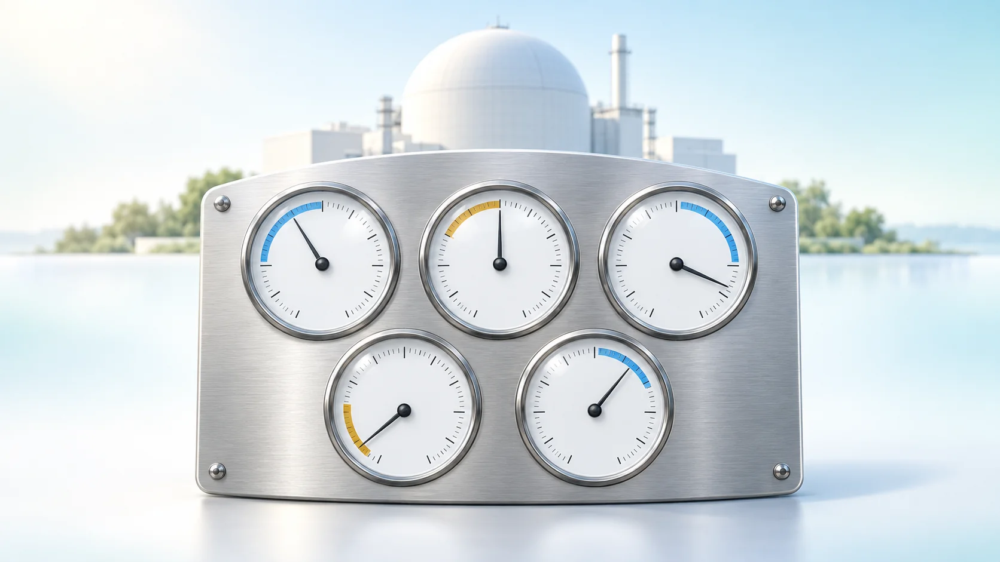
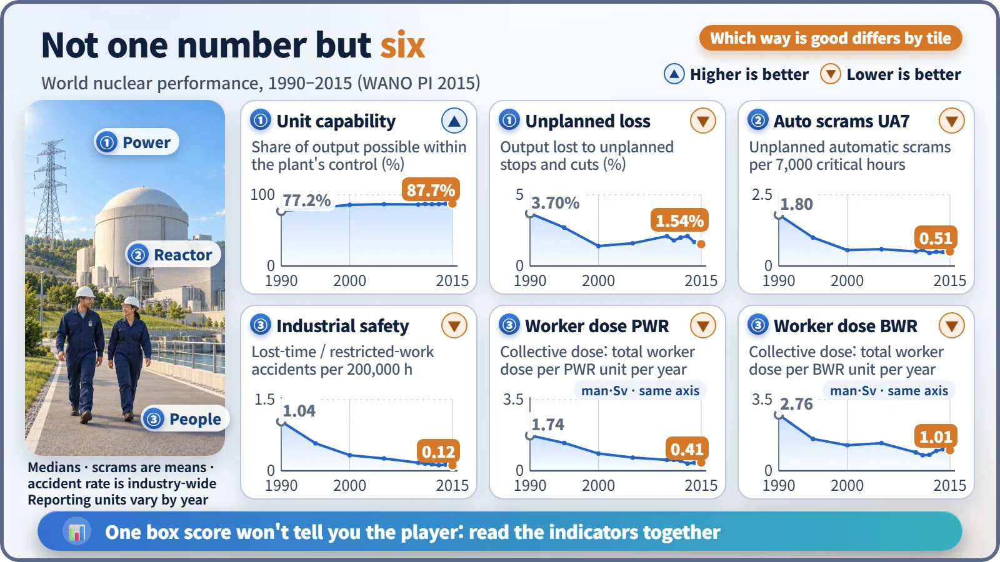
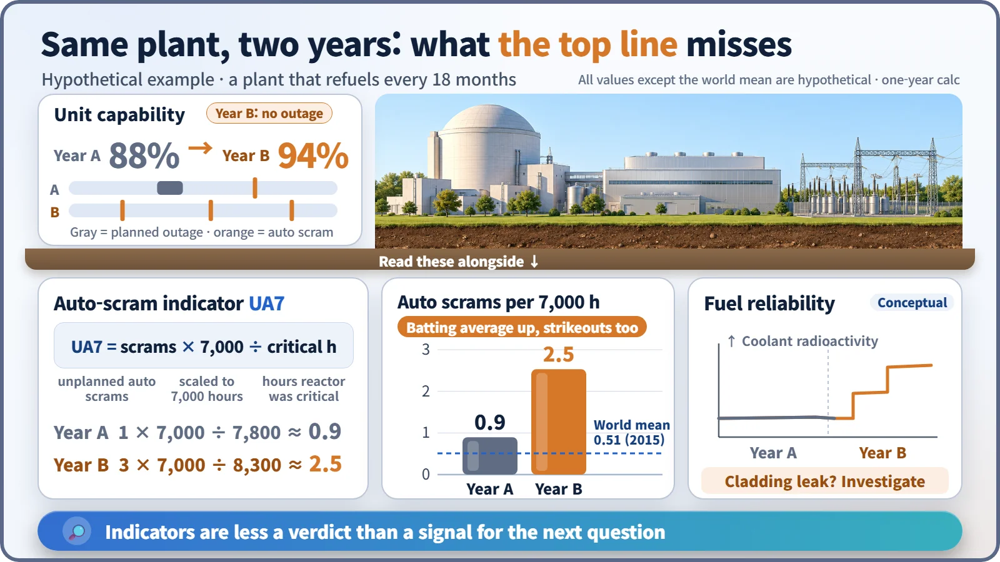

Plant Operation, Control & the Grid · 250
You Don't Pick a Cleanup Hitter on Batting Average Alone — How to Read Nuclear Plant Performance Indicators
Power, reactor, people: a stat sheet of several numbers calculated by common rules. One alone can mislead; together they show where to look closer.

Nuclear operating performance indicators are a set of numbers, calculated by common rules, covering how steadily a plant made electricity, how smoothly its reactor ran, and how well it protected people and equipment. Read one alone and you can be misled; read them together, over three-year windows and within the same reactor type, and they point to where to look closer. [1]
Never just one number on the screen
When a batter steps up on a baseball broadcast, a caption shows batting average, home runs, RBIs and on-base percentage, always four or five together. Even for a .300 hitter, if strikeouts suddenly pile up, the manager rethinks the lineup and the coach studies his swing.
Nuclear power plants have a stat sheet like this too: operating performance indicators. They measure how steadily a plant produced electricity, how smoothly it ran its reactor, and how well it protected its people and equipment, all calculated by the same rules so that plants can be compared with each other and year by year. The World Association of Nuclear Operators (WANO) has collected them since 1991, and the IAEA publishes statistics with the same definitions. [1] [2]
Three columns: power, reactor, people
How steadily did it produce electricity? The headline stat is the unit capability factor (UCF): set a full year at reference output to 100, subtract only the losses the plant is responsible for, and see how much it could have supplied. Leaving out causes it can't control, such as grid conditions, is what makes it different from the familiar capacity factor. Alongside it come the unplanned capability loss factor (UCLF) and the forced loss rate (FLR), the shares eaten by stops that weren't scheduled. "Planned" means scheduled at least four weeks in advance. [2]
How smoothly did the reactor run? The key stat is UA7:
UA7 = number of unplanned automatic scrams × 7,000 ÷ hours the reactor was critical
An automatic scram is when a protection system detects an abnormality and drives all the control rods in at once. "Critical" means the reactor is running with a self-sustaining chain reaction. The 7,000 hours, about 80% of the 8,760 hours in a year, puts plants with different running times on the same "one year's worth" scale. Also tracked is the share of time standby safety systems, such as emergency power or emergency cooling pumps, were unavailable (SSPI). [3]
Were the people and equipment healthy? This family covers collective dose (the sum of radiation doses to everyone who worked at a unit in a year), the industrial safety accident rate (lost-time and restricted-work accidents per 200,000 hours worked), fuel reliability (radioactive material in the coolant as a gauge of cladding leaks) and chemistry performance (water chemistry that slows corrosion).
Spreading out 25 years of records

| Indicator (world) | 1990 | 2015 |
|---|---|---|
| Unit capability factor, median | 77.2% | 87.7% |
| Automatic scrams per 7,000 h, mean | 1.80 | 0.51 |
| Industrial safety accidents per 200,000 h | 1.04 | 0.12 |
| Collective dose per PWR unit, median | 1.74 man·Sv | 0.41 man·Sv |
A man-sievert is a unit that adds up the doses received by many people. The set of plants reporting changed a little each year, so this isn't a comparison of exactly the same plants, but the trend is clear: steadier electricity production alongside fewer stops, accidents and exposures. [1]
A .300 average, but more strikeouts
Look at only one number and the story can flip. Take a hypothetical plant that refuels every 18 months, so some years have no refueling outage. In such a year its unit capability factor jumps from 88% to 94%: the best year ever, if you read only the top line. But further down, automatic scrams rose from one to three. The reactor ran 8,300 hours, so UA7 is 3 × 7,000 ÷ 8,300 ≈ 2.5, nearly three times the previous year's 0.9. Radioactive material in the coolant also climbed in steps, a possible fuel cladding leak.

An automatic scram itself is not an accident: it means the protection system did its job. What the indicator asks is "why do unplanned upsets keep happening?" Like a coach studying the swing of a hitter whose strikeouts are up, operators should look at maintenance quality or equipment aging.
More warning light than report card
Look through a 36-month window. WANO's key indicators and targets combine three years, filtering out one year's good or bad luck. [4]
View different reactor types separately. In a boiling water reactor (BWR), steam goes straight from the reactor to the turbine, among other differences, so collective dose levels differ. Data are grouped by type, and fuel reliability, chemistry and safety system indicators are never pooled across types.
A threshold is a cue to check, not a grade. The US NRC moves a plant from green to white, with additional inspection, when unplanned shutdowns (automatic and manual) exceed three per 7,000 hours over the past year. That means "let's look closer," not "dangerous." [3]
WANO itself calls a good set of indicators a partial measure of plant operation; once hitting the numbers becomes the goal, they easily lose their power to show what's happening on site. South Korea's operator, KHNP, also sets goals in this language: its 2024 targets include a composite index of several WANO indicators of 89 points and no more than 0.30 unplanned shutdowns per unit. [5]
Key takeaways
When nuclear news quotes a utilization rate, get curious about the next columns: did stops go down, how was workers' dose, was the fuel intact? Performance indicators are not a one-line scoreboard but a set of warning lights that tell you where to look closer, the way a good manager spreads out the whole stat sheet to read a player.